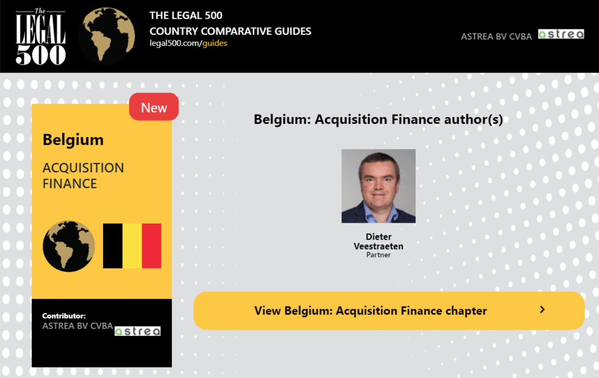

Legal500 Comparative Guides: Export PDf Guides functionality
I have implemented a functionality where the user can export the PDF. Exporting PDF guides on Legal500
website using mPDF involves converting dynamic webpage content into downloadable PDFs. mPDF, a PHP library,
facilitates this process. Customization options allow tailored PDF layouts. When a user requests a guide,
dynamic content is generated, converted to PDF, and sent for download.
Legal500 Comparative Guides: Download Social Image
I've integrated a functionality which allows users to export dynamic images.
This feature enables users to capture and save visual representations of content that
dynamically changes on the webpage. It used the htmltocanvas library, a specialized tool
for converting HTML elements into images. When activated, the library processes the HTML
content, transforming it into a static visual format that accurately mirrors the dynamic content.

Dynamic Hierarchical Team Chart Integration with DHTMLx Library
As a developer, one of my notable achievements is the seamless integration of the DHTMLx
library on a website, showcasing teams hierarchically. This dynamic feature empowers users
to intuitively explore the organizational structure, offering clear insights into team
relationships. With interactive navigation, users can expand and collapse branches,
gaining a comprehensive view of the team hierarchy. Moreover, I've incorporated tools
for real-time management, allowing users to add, edit, and oversee team members directly
within the diagram. This implementation stands as a testament to my proficiency in creating
user-friendly and informative interfaces for effective organizational management.
Dynamic Event Website on WordPress Multisite
Led the development of an events-centric website within Legal500 multisite setup.
Implemented a seamless user experience with HTML, CSS, and PHP. Crafted visually
appealing interfaces for various devices, enabling dynamic event listings. Engineered a
robust backend for easy content management. Adhered to industry standards, ensuring a secure
and stable environment for users and administrators alike.